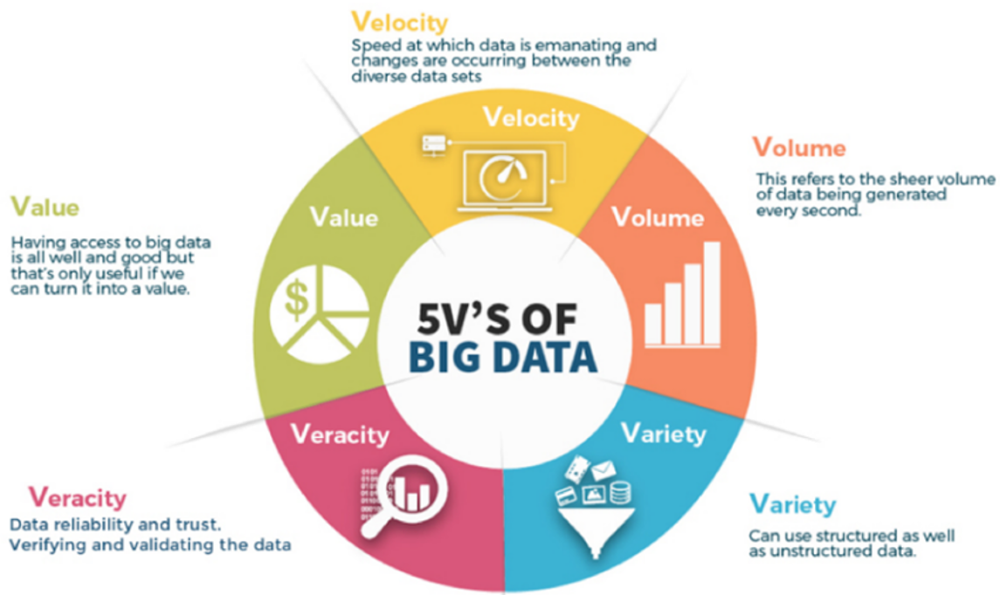
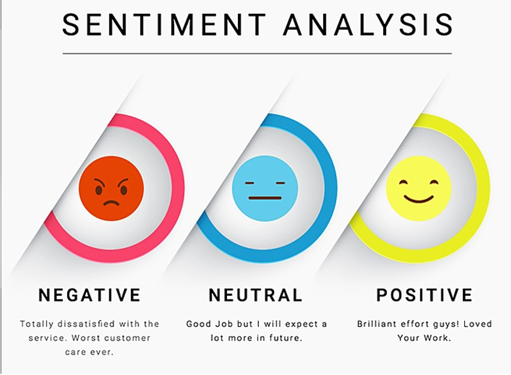

TEKNOLOGI BIG DATA UNTUK PARIWISATA
Big Data terkait dengan konsep data dalam jumlah besar, data tersebut bisa dalam bentuk data terstruktur maupun data tidak terstruktur. Setidaknya ada dua faktor utama yang menyebabkan saat ini kita berada dalam era banjir data yaitu meluas dan semakin terjangkaunya internet serta pertumbuhan penggunaan smartphone beserta semua aplikasi pendukung yang terpasang di dalamnya.

SENTIMENT ANALYSIS DALAM BIG DATA ANALYTICS UNTUK PARIWISATA
Sentiment analysis merujuk kepada analisis untuk menentukan polaritas dari sebuah komentar atau review konsumen terhadap sebuah produk atau jasa. Polaritas dapat berupa komentar positif dan komentar negatif, beberapa penelitian juga menentukan polaritas netral pada kalimat komentar. Sentiment analysis lebih lanjut dapat pula menentukan aspek emosi dari kalimat opini tersebut seperti marah, sedih atau gembira.

RANCANGAN BUSINESS INTELLIGENCE SYSTEM UNTUK HOSPITALITY
Dalam mengembangkan business intelligence system (BI System) untuk hospitality maka secara garis besar data dapat dibagi menjadi 2 sumber yaitu data internal perusahaan dan data eksternal perusahaan.

MEMAHAMI WISATAWAN DENGAN BIG DATA ANALYTICS
Prediksi perilaku masa depan wisatawan tidak didasarkan pada data statistik biasa, tetapi data pribadi yang nyata. Orang dapat dengan mudah berasumsi bahwa wisatawan dengan anak usia sekolah merencanakan perjalanan selama liburan sekolah berkat analisis data berdasarkan log web atau komunikasi media sosial, tenaga pemasaran dapat dengan mudah menghubungi orang yang tepat (orang tua anak sekolah).

PERKEMBANGAN BIG DATA ANALYTICS DI BIDANG PARIWISATA
Untuk mempertahankan kelangsungan hidup dari sebuah bisnis maka adaptasi terhadap transformasi digital dan kemajuan teknologi menjadi sebuah keharusan, tidak terkecuali untuk industri pariwisata. Lingkungan online memungkinkan perubahan cara orang untuk mendapatkan informasi begitu juga untuk menyumbang informasi ke dalam platform digital.